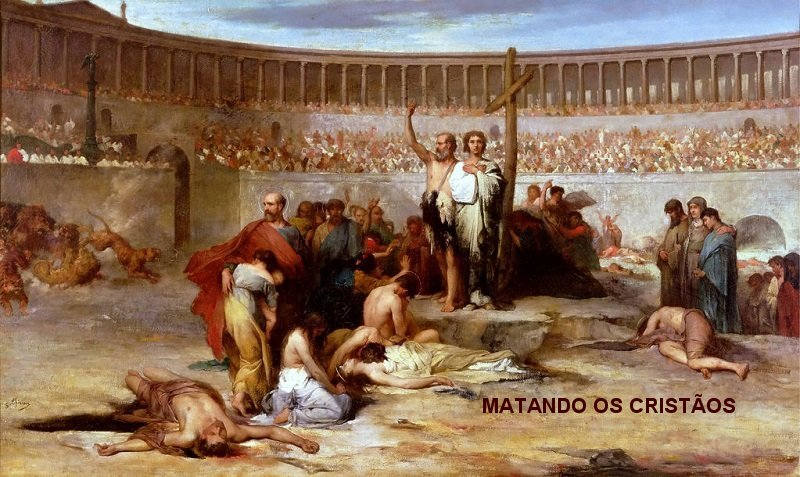
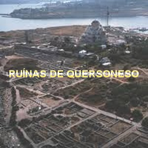
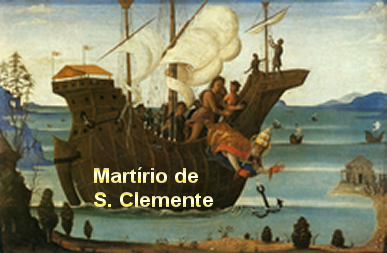
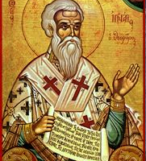

“IMPERADOR CRUEL”
A TERRÍVEL PERSEGUIÇÃO AOS CRISTÃOS
Na verdade, desde o inicio do Cristianismo,
a perseguição aos cristãos jamais cessou. Às vezes atravessava períodos tranquilos de
acordo com os sentimentos do 
MARTÍRIO
Embora São Clemente fosse o Sumo Pontífice da Igreja Católica, Trajano o Imperador no ano 97, não considerou. Ele que já vinha praticando uma série de absurdos e perseguições covardes contra os cristãos, disse ter encontrado culpa no procedimento do Papa, acusando-o de desobediência aos editos imperiais e de ter blasfemado contra os deuses dos pagãos, e por isso o deportou para a região denominada Taurico-Quersoneso, na Criméia. Forçado a deixar Roma, o Papa Clemente I renunciou a cátedra de Pedro, que foi assumida pelo quinto Papa da Igreja Católica, o Bispo Santo Evaristo, no ano 97 da era cristã, pelo fato real de que os cristãos não podiam ficar sem um guia espiritual.
O prefeito Mamertius, executando as ordens imperiais com extrema deferência, mandou preparar um navio para o nobre exílio de S. Clemente. Muitos cristãos queriam acompanhar o venerável Pontífice e por isso, também decidiram compartilhar o seu destino.
Chegado ao final da viagem, São Clemente encontrou na Península (Quersoneso) muitos fiéis, que também foram deportados pela mesma causa, ou seja, caíram em desgraça perante os Imperadores Romanos e foram condenados as Minas de Manganês, Titânio e Caulim. Ao chegar, Clemente lhes disse carinhosamente que veio compartilhar os seus sofrimentos e fortalecer a fé daqueles de boa vontade. Ele tinha tempo e disposição para pregar os ensinamentos cristãos, e de modo admirável foi conseguindo evangelizar e converter muitos presos ao Cristianismo. E também lá existiam muitos cristãos que tinham sido condenados a trabalhos forçados nas minas. Assim, o exílio de Clemente foi providencial para aquelas pessoas que necessitavam de estimulo, de instrução cristã e encorajamento, no sentido de perseverarem na fé e permanecerem perto de DEUS. Também no meio dos exilados havia muitos pagãos e pessoas que não acreditavam em nada. Clemente teve a oportunidade de converter muitos deles, propiciando-lhes o Amor de DEUS em plenitude e um convívio humano e carinhoso dentro da comunidade cristã que se formou.

Também fez nascer naquele ambiente de trabalho duro e permanente, um espírito de religiosidade, que aos poucos foi conduzindo muitas daquelas pessoas a rezar, a ouvir e meditar sobre os sermões e conselhos de Clemente, que se empenhou em prepará-los para a eternidade. No espaço de um ano, conseguiram edificar uma pequena Igreja, onde passaram a se reunir nos finais das semanas, para participarem da Santa Missa e ouvirem as homilias do Pontífice. O ambiente melhorou, a produção do trabalho aumentou consideravelmente e o cristianismo desabrochou em todos os corações desejosos de DEUS.
O sucesso da evangelização realizada por São Clemente no exílio se espalhou em todas as direções e chegou a Roma. Trajano irritado com a notícia ficou louco de raiva. Ordenou que Clemente fizesse publicamente uma homenagem aos “deuses” e de joelhos, lhes prestasse sacrifícios. Quando Clemente recebeu a mensagem, disse ao emissário: “Diz ao Imperador que só existe um DEUS. ELE é o meu DEUS a quem com todo prazer e amor, eu louvo, homenageio e sempre servi, e LHE dedico todos os sacrifícios da minha vida”.
O Imperador ouvindo aquele recado
ficou louco de raiva e ordenou que o ex-Papa fosse atirado ao Mar Negro, com uma
pesada âncora atada ao pescoço. A ordem foi 
Aquela região na Criméia, era uma Colônia da Grécia Antiga, fundada há 2.500 anos. Situava-se as margens do Mar Negro, e também era conhecida por Quérson (palavra grega que significa Península), que se localizava numa área a sudoeste da Criméia, conhecida com o nome de Taurica. Daí a razão de dizer que tudo aconteceu na região Chersoneso-Taurico que hoje, todo aquele território pertence a União Soviética. Esta região, naqueles tempos, tinha residência de um Czar Russo, e por essa razão, existia no local uma guarnição imperial, para proteção da cidade e dos nobres. Era um local tradicional de exílio. Assim, todos aqueles que caíssem em desgraça perante os Imperadores Romanos ou Bizantinos, para aquele local eram deportados. Pois aquele local, naquela época, fazia parte do Grande Império Romano. E foi justamente para onde o Papa Clemente I foi exilado.
HOMENAGENS A SÃO CLEMENTE

A Igreja Bizantina Grega celebra Clemente como Santo e Mártir no dia 24 de Novembro (assim como São Pedro).
Na Igreja Bizantina Russa, os dois (São Pedro e São Clemente) são lembrados e festejados no dia 25 de Novembro.
Na Igreja Católica Apostólica Romana, Clemente é venerado como padroeiro dos marinheiros, e sua festa é no dia 23 de Novembro. Sua atribuição é uma âncora. Em sua honra, foi erguida em Roma, uma notável Basílica. A parte externa da Basílica não é muito atraente, mas o seu interior é admirável e magnífico.
Oração feita pelo Papa São Clemente I:
“DEUS PAI misericordioso, que dais a morte e a vida, que abateis a insolência dos orgulhosos e frustrais as maquinações dos povos, vinde em nosso auxílio, ó SENHOR, meu DEUS. Matai a fome dos indigentes e libertai aqueles que entre nós sucumbiram. DEUS bom e misericordioso esqueça nossos muitos pecados, nossos erros e equívocos; não leve em conta as faltas dos VOSSOS servos e servas. Dai-nos a concórdia e a paz, não só para nós, mas também para todos os que buscam o VOSSO Amor de PAI”.
“É de VÓS que os príncipes e os que no mundo nos governam recebem o poder: dai-lhes SENHOR, saúde, paz, concórdia e estabilidade; dirigi os seus propósitos pela senda do bem. Só VÓS SENHOR, SÓIS a verdadeira misericórdia. Nós o proclamamos fervorosamente através do maravilhoso Sumo Sacerdote de nossa alma, NOSSO SENHOR JESUS CRISTO, VOSSO digníssimo e amado FILHO e por Quem VOS seja dada honra e glória, na unidade com o ESPÍRITO SANTO, agora e por todos os séculos, dos séculos”. “Amém”.